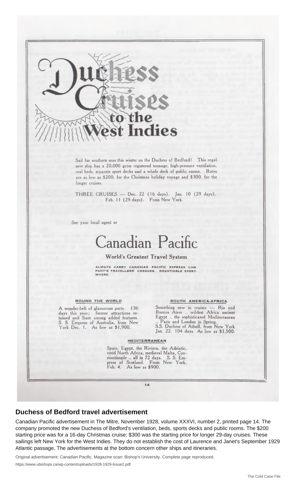
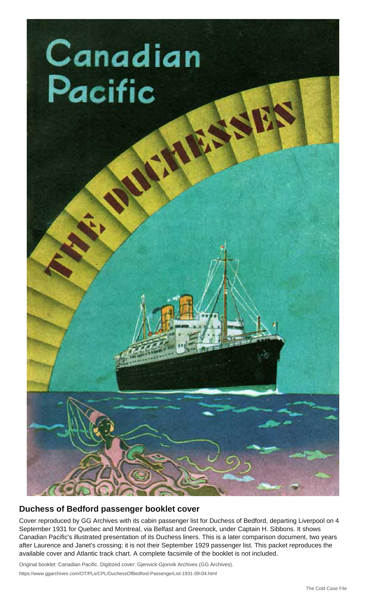
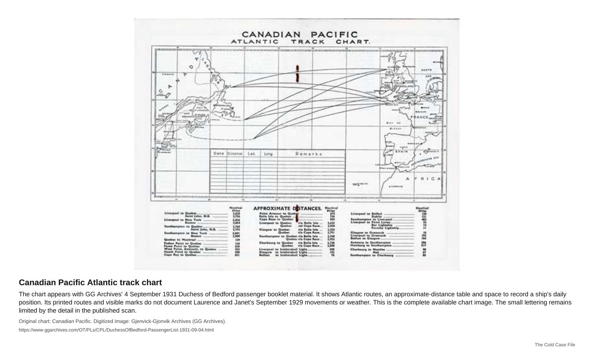

The Cold Case File · Enlarged source documents
Duchess of Bedford advertisement and booklet
A full advertisement page from November 1928, followed by the available cover and Atlantic track chart from a September 1931 passenger booklet. Each image is enlarged and captioned. Printable PDFs and the complete download package are below.
Dates and scope: the advertisement promotes West Indies cruises from New York. The booklet material dates to 1931, two years after Laurence and Janet’s crossing. The cover and chart reproduced here are the available images, not a complete booklet facsimile.
Printing: US legal paper, 8.5 × 14 inches. The advertisement and cover are portrait; the chart is landscape. Use automatic page orientation and actual size or fit to printable area.
November 1928 · Advertisement
Duchess of Bedford travel advertisement
Canadian Pacific’s advertisement in The Mitre, November 1928, volume XXXVI, number 2, printed page 14. The full magazine page is reproduced, including the other advertisements below.
The $200 starting price refers to a 16-day Christmas cruise; $300 refers to longer 29-day cruises. These were West Indies sailings from New York. Neither price establishes the cost of Laurence and Janet’s September 1929 Atlantic passage.


Original advertisement: Canadian Pacific. Magazine scan: Bishop’s University. Source magazine PDF ↗ · printed page 14, PDF page 18.
4 September 1931 · Passenger booklet
Passenger booklet cover
The cover accompanies GG Archives’ cabin passenger list for Duchess of Bedford, departing Liverpool on 4 September 1931 for Quebec and Montreal, via Belfast and Greenock, under Captain H. Sibbons.
This is later comparison material. It is not Laurence and Janet’s 1929 passenger list. The booklet download contains the available cover and the Atlantic track chart shown below.


Original booklet: Canadian Pacific. Digitized cover: Gjenvick-Gjønvik Archives (GG Archives). Source passenger list and booklet images ↗.
1931 booklet material · Route chart
Canadian Pacific Atlantic track chart
The chart shows Atlantic routes, an approximate-distance table and space to record a ship’s daily position. Its printed routes and visible marks do not document Laurence and Janet’s September 1929 movements or weather.
This is the complete available chart image. Small lettering remains limited by the detail in the published scan.


Original chart: Canadian Pacific. Digitized image: Gjenvick-Gjønvik Archives (GG Archives). Source booklet material ↗.